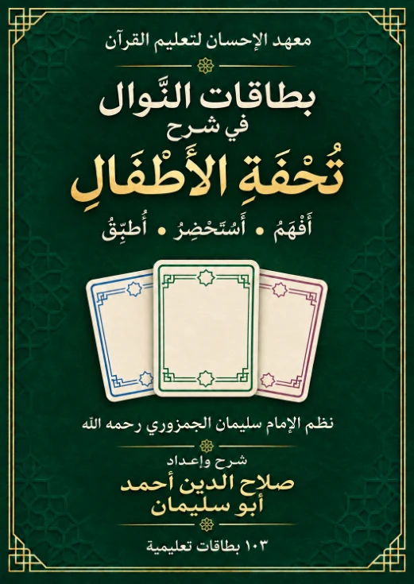

العودة إلى الفهرس

معهد الإحسان لتعليم القرآن
بطاقات النوال في شرح تحفة الأطفال
103 بطاقات تعليمية لتعلم وتطبيق منظومة تحفة الأطفال في علم التجويد
كتاب تعليمي باللغة العربية (206 صفحات) يقدّم 103 بطاقات منهجية متدرجة («فهم · حفظ · تطبيق») حول منظومة «تحفة الأطفال» للشيخ سليمان الجمزوري، وفق رواية حفص عن عاصم من طريق الشاطبية.
لا يتطلب تسجيلًا ولا دفعًا. العمل محمي بحقوق النشر.